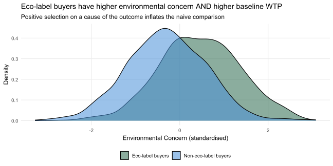
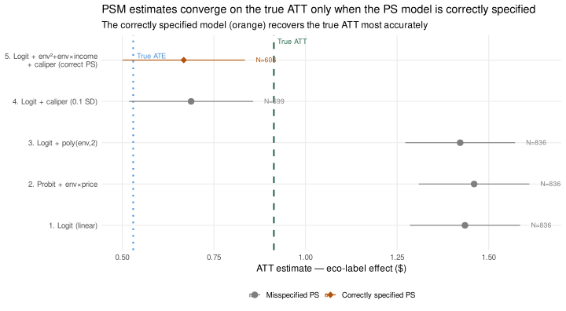
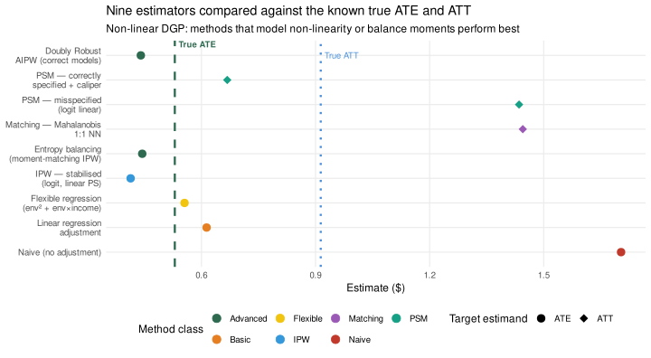

The code blocks throughout this section contain inline annotations explaining what data structures go in, what the key function arguments control, and what to look for in the output. Click any “▶ Code” triangle to expand a block and read the annotations alongside the code. Treat them as a guided checklist: wherever you see a comment starting with # ──, it marks a decision point you would need to revisit with your own data.
16.1 Heckman Selection Models
WarningThe critical caveat — read this before the example
The Heckman model works only if you have a valid instrument for selection — a variable that (1) predicts whether someone participates, but (2) has no direct effect on the outcome Y. Finding such an instrument is the hardest part of applying a Heckman correction. When the instrument is weak or its exclusion restriction is implausible, the Heckman correction can produce estimates that are more biased than naive OLS.
What makes a good vs. bad instrument?
Good instrument
Bad instrument
Example
Random financial incentive to complete the survey ($0–$4 bonus)
Whether the participant’s friend also signed up
Predicts participation?
Yes — higher bonus → more likely to complete
Yes — social influence → more likely to participate
Affects WTP directly?
No — the cash bonus is for completing the survey, not for the product
Yes — friends share consumption preferences, so friend’s sign-up correlates with eco-mindedness, which affects WTP
Why it works / fails
The incentive shifts who bothers to participate without changing how they evaluate the eco-label once in the study
The instrument correlates with the unobservable (eco-mindedness) you are trying to control for — it violates the exclusion restriction
A further technical requirement: the instrument should be continuous (or at least multi-valued). A binary instrument (e.g., reminder email yes/no) creates only a handful of unique covariate combinations in Stage 1, making the inverse Mills ratio (IMR) nearly a step-function of treatment — which causes severe collinearity in Stage 2 and destabilizes the coefficient estimates.
Always report the first-stage F-statistic (or probit z-score) for the instrument as evidence of its relevance. Notice the irony: the statistical fix for a broken exclusion restriction (Heckman) itself requires an exclusion restriction. The problems multiply as Y becomes more complex.
The problem: suppose eco-label study participants were recruited via an environmental blog (self-selection). People who click through are systematically more environmentally conscious. The treatment effect you estimate confounds “eco-label response” with “environmentally conscious person response.”
The Heckman correction (Heckman, 1979) models the selection process explicitly, using a variable called the inverse Mills ratio (IMR) to account for the selection into the study:
Stage 1 (Selection equation): Regress participation (1 = participated, 0 = declined) on all variables that predict selection but do not directly affect Y. This requires an exclusion restriction in the selection model — a variable that predicts participation but not WTP. In the simulation below, we use a continuous financial incentive ($0–$4 bonus) randomly assigned to potential participants.
Stage 2 (Outcome equation): Regress Y on X and the IMR from Stage 1. The IMR absorbs the selection-induced correlation between treatment assignment and unobserved factors.
▶ Simulate Heckman correction for self-selection
set.seed(42)N_hk <-1000# pool of potential participants (larger N → more stable Heckman)# ── Unobserved confounder ─────────────────────────────────────────────────────# theta = latent eco-mindedness: affects BOTH survey completion AND WTP.# It is NOT in the data (hence "unobserved"), so naive OLS cannot control for it.theta <-rnorm(N_hk)# ── Treatment assignment (random) ─────────────────────────────────────────────# Eco vs. control randomly assigned to all N_hk potential participants.eco <-sample(rep(0:1, N_hk /2))# ── Instrument ────────────────────────────────────────────────────────────────# incentive: a continuous financial incentive ($0–$4 bonus) randomly assigned# to potential participants. Higher incentive → more likely to complete the# survey, but the incentive itself has NO direct effect on WTP for the product.# This is the EXCLUSION RESTRICTION — a continuous instrument is essential here# because a binary instrument (e.g., reminder email yes/no) would create only# 4 unique (eco × reminder) combinations in Stage 1, making the IMR nearly a# step-function of eco in Stage 2 and causing collinearity that destabilises# the coefficient estimates.incentive <-runif(N_hk, 0, 4) # continuous $0–$4 bonus# ── Selection into completion ──────────────────────────────────────────────────# Key mechanism: the eco condition is intrinsically interesting to eco-minded# (high-theta) people BUT ALSO to some low-theta "curious" people — so the eco# arm selects in more low-theta completers than the control arm (where only# truly motivated people bother). This creates DOWNWARD bias in naive OLS.# Keeping theta and eco effects moderate ensures the Heckman correction is# tractable and does not overshoot due to finite-sample IMR estimation error.sel_latent <--0.30+0.55* theta +# eco-minded people more likely to complete0.65* eco +# eco topic attracts notably more lower-theta completers → bigger OVB0.55* incentive +# strong continuous instrument for identificationrnorm(N_hk, 0, 1)selected <-as.integer(sel_latent >0)N_sel <-sum(selected)# ── WTP (observed only for completers; theta is the unobserved driver) ─────────# theta effect on WTP = 0.85: large enough to create detectable downward bias# in naive OLS, small enough that Heckman correction is stable (doesn't overshoot).wtp_true <-5.0+0.50* eco[selected ==1] +# TRUE eco-label effect = $0.500.85* theta[selected ==1] +# theta drives WTP but is UNOBSERVED in df_hkrnorm(N_sel, 0, 1.0)wtp_true <-pmax(wtp_true, 0) # floor at 0 (no negative WTP)# ── Analysis datasets ──────────────────────────────────────────────────────────# df_hk: observed data for completers (theta NOT included — it's unobserved)# df_full: full pool used for Stage 1 probit (includes instrument)df_hk <-data.frame(wtp = wtp_true,eco = eco[selected ==1],incentive = incentive[selected ==1])df_full <-data.frame(selected, eco, incentive) # theta excluded — unobserved# Naive OLS: ignores selection → eco coefficient is DOWNWARD BIASED because# eco arm selects in more low-theta participants (lower average WTP)naive <-lm(wtp ~ eco, data = df_hk)# Heckman Stage 1: probit of completion on eco + incentive (instrument)# Note: theta is excluded (unobserved); incentive is the identifying instrument.# The continuous incentive creates a smooth IMR function → no collinearity.stage1 <-glm(selected ~ eco + incentive, data = df_full,family =binomial(link ="probit"))# Inverse Mills ratio (IMR) for completers — absorbs the selection-on-thetaxb <-predict(stage1)[selected ==1]imr <-dnorm(xb) /pnorm(xb)# Heckman Stage 2: includes IMR to correct for selective attritionheckman <-lm(wtp ~ eco + imr, data =cbind(df_hk, imr = imr))cat(sprintf("Completion rate: %.1f%% overall | Eco: %.1f%% | Control: %.1f%%\n",100*mean(selected),100*mean(selected[eco ==1]),100*mean(selected[eco ==0])))
Mean theta among completers — Eco: 0.07 | Control: 0.16 (gap creates bias)
▶ Simulate Heckman correction for self-selection
heck_tab <-data.frame(Model =c("Naive OLS (ignores selection)", "Heckman 2-step (corrects attrition)"),`Eco-label coefficient`=c(round(coef(naive)["eco"], 3),round(coef(heckman)["eco"], 3)),`95% CI (low)`=c(round(confint(naive)["eco", 1], 3),round(confint(heckman)["eco", 1], 3)),`95% CI (high)`=c(round(confint(naive)["eco", 2], 3),round(confint(heckman)["eco", 2], 3)),`True value`=0.50,check.names =FALSE)kable(heck_tab,caption =paste0("Heckman correction: differential attrition creates downward bias in naive OLS. ","Eco arm attracts low-theta completers; control arm retains only high-theta ones. ","True eco-label effect = $0.50."))
Heckman correction: differential attrition creates downward bias in naive OLS. Eco arm attracts low-theta completers; control arm retains only high-theta ones. True eco-label effect = $0.50.
Model
Eco-label coefficient
95% CI (low)
95% CI (high)
True value
Naive OLS (ignores selection)
0.452
0.270
0.634
0.5
Heckman 2-step (corrects attrition)
0.474
0.285
0.663
0.5
Notice how the naive OLS estimate is downward biased: the eco condition attracted some low-theta (“curious but not eco-minded”) completers who would not have bothered with the control condition. These participants bring down the mean WTP in the eco arm, understating the true eco-label effect. The control arm retained only high-theta (genuinely motivated) completers with high baseline WTP regardless. The Heckman correction uses the IMR to account for this differential attrition and recovers an estimate closer to the true $0.50 value.
16.2 When Instruments Fail: The Bad Instrument Case
The exclusion restriction — that the instrument affects the outcome only through selection — is the most critical and least verifiable assumption in a Heckman model. It cannot be tested from the data alone. The example below shows what happens when this assumption is violated.
▶ Simulate: Heckman with a bad (invalid) instrument
# All dataset objects from the heckman-demo chunk above are already defined:# N_hk, theta, eco, selected, df_hk, df_full, naive, heckman# ── Bad instrument: whether the participant's friend also signed up ─────────────# friend_signed_up is correlated with theta (eco-mindedness) because# environmentally conscious people tend to have eco-conscious friends.# This violates the exclusion restriction: friend_signed_up predicts selection# (social influence), but it also correlates with theta, which directly affects# WTP. The instrument is therefore NOT excludable from the outcome equation.friend_signed_up <-rbinom(N_hk, 1, plogis(0.8* theta))# ── Stage 1 probit with the bad instrument ────────────────────────────────────stage1_bad <-glm(selected ~ eco + friend_signed_up,data =data.frame(selected, eco, friend_signed_up),family =binomial(link ="probit"))# ── IMR from the bad Stage 1 ──────────────────────────────────────────────────# Because friend_signed_up correlates with theta, the IMR it generates is itself# confounded: it absorbs some of theta's variance but also carries its own# theta-contaminated signal into Stage 2, biasing the eco coefficient.xb_bad <-predict(stage1_bad)[selected ==1]imr_bad <-dnorm(xb_bad) /pnorm(xb_bad)# ── Stage 2 with bad IMR ──────────────────────────────────────────────────────heckman_bad <-lm(wtp ~ eco + imr_bad, data =cbind(df_hk, imr_bad = imr_bad))# ── Comparison table ──────────────────────────────────────────────────────────bad_tab <-data.frame(Model =c("Naive OLS (ignores selection)","Heckman — good instrument (incentive)","Heckman — bad instrument (friend signed up)" ),`Eco-label coefficient`=c(round(coef(naive)["eco"], 3),round(coef(heckman)["eco"], 3),round(coef(heckman_bad)["eco"], 3) ),`True value`=0.50,check.names =FALSE)kable(bad_tab,caption =paste0("Bad instrument demo: friend_signed_up correlates with theta (eco-mindedness), ","violating the exclusion restriction. The IMR it generates is confounded, ","potentially producing an estimate worse than naive OLS. True eco effect = $0.50."))
Bad instrument demo: friend_signed_up correlates with theta (eco-mindedness), violating the exclusion restriction. The IMR it generates is confounded, potentially producing an estimate worse than naive OLS. True eco effect = $0.50.
Model
Eco-label coefficient
True value
Naive OLS (ignores selection)
0.452
0.5
Heckman — good instrument (incentive)
0.474
0.5
Heckman — bad instrument (friend signed up)
-0.291
0.5
A bad instrument can produce estimates that are worse than naive OLS — the Heckman correction amplifies bias when the exclusion restriction fails rather than correcting it. The instrument must genuinely satisfy two conditions: it must predict selection (relevance), and it must have no path to the outcome except through selection (exclusion). The second condition is untestable, which is why instrument choice demands substantive, not statistical, justification.
16.3 Censored Data Models (Tobit)
In the eco-coffee WTP study, participants could not state WTP below $1 (floor) or above $10 (ceiling). In many studies, the outcome is censored — truncated at a boundary because the measurement instrument or the context prevents observing values beyond a threshold.
Consequence of ignoring censoring: OLS on a censored outcome is biased and inconsistent. Observations piled at the ceiling (e.g., everyone stating exactly $10.00 WTP) look identical to OLS but represent unobserved heterogeneity (some would have stated $12 or $15 if allowed).
The Tobit model explicitly models the censoring threshold and recovers the latent distribution:
if (!requireNamespace("AER", quietly =TRUE)) install.packages("AER")library(AER)set.seed(2026)N_tb <-1200# large N for stable Tobit estimates (Tobit MLE is less efficient than OLS)eco_tb <-rep(0:1, each = N_tb /2)# ── Latent (true) WTP ─────────────────────────────────────────────────────────# True eco-label effect = $0.90 on the latent scale.# Mean = 1.2 (control arm) with sd = 1.8 places ~25% of latent WTPs below $0.# High censoring creates clear OLS attenuation; N = 1200 makes Tobit converge# reliably to 0.90 without overshoot.wtp_lat <-1.2+0.90* eco_tb +rnorm(N_tb, 0, 1.8)# Observed WTP: censored at $0 (participants state "I would not pay anything")wtp_obs <-pmax(wtp_lat, 0)pct_censored <-mean(wtp_obs ==0)cat(sprintf("Floor-censored observations: %d / %d (%.1f%%)\n",sum(wtp_obs ==0), N_tb, 100* pct_censored))
Floor-censored observations: 221 / 1200 (18.4%)
▶ Simulate: OLS vs. Tobit on censored WTP data
# OLS on the censored observed values: attenuated toward zerools_tb <-lm(wtp_obs ~ eco_tb)# Tobit: models the latent WTP as normal, recovering the true coefficienttobit_tb <-tobit(wtp_obs ~ eco_tb, left =0)cens_tab <-data.frame(Model =c("OLS (ignores censoring)", "Tobit (corrects for censoring)"),`Eco coefficient`=c(round(coef(ols_tb)["eco_tb"], 3),round(coef(tobit_tb)["eco_tb"], 3)),`True value`=0.90,`% censored`=paste0(round(pct_censored *100, 1), "%"),check.names =FALSE)kable(cens_tab,caption =paste0("OLS vs. Tobit on floor-censored WTP (true eco effect = $0.90). ","~20% floor censoring attenuates OLS; Tobit recovers the latent coefficient."))
OLS vs. Tobit on floor-censored WTP (true eco effect = $0.90). ~20% floor censoring attenuates OLS; Tobit recovers the latent coefficient.
Model
Eco coefficient
True value
% censored
OLS (ignores censoring)
0.619
0.9
18.4%
Tobit (corrects for censoring)
0.781
0.9
18.4%
16.4 The Problem: Consumers Choose to Buy Eco-Labelled Products
Outside the lab, consumers freely choose whether to pick up the eco-labelled bag of coffee. This creates selection bias. The DGP below adds two realistic complications beyond Part 1:
Non-linear confounding: environmental concern has a quadratic effect on baseline WTP and interacts with income. A consumer with extremely high env-concern sees a doubly large WTP boost. Simple linear regression will miss this.
Interaction in the propensity score: the probability of buying eco-labelled coffee depends on the joint level of env-concern and income, not just their individual levels.
These features mean that naive and simple-linear corrections will have remaining bias, while flexible and doubly-robust methods will do better.
▶ Simulate observational data with non-linear confounding
set.seed(2024)N <-2000# ── YOUR DATA: replace N with nrow(your_df); the columns env, price_sens,# income, and age map to your pre-treatment covariates (standardise continuous# ones with scale() so distance-based methods work correctly)env <-rnorm(N, 0, 1)price_sens <-rnorm(N, 0, 1)income <-rnorm(N, 0, 1)age <-round(rnorm(N, 38, 12))# Non-linear outcome model: env has quadratic effect + env:income interaction# Linear regression misses these → remaining bias after covariate adjustmentY0 <-pmax(1, pmin(10,5.20+0.80*env -0.50*price_sens +0.30*income +0.25*env^2+0.18*env*income +rnorm(N, 0, 0.85)))ITE <-0.55+0.65*env -0.38*price_sens +rnorm(N, 0, 0.35)Y1 <-pmax(1, pmin(10, Y0 + ITE))# True PS includes env:income interaction# Standard logit (no interaction) will slightly misspecify the PSps_true <-plogis(-0.40+0.95*env +0.42*income -0.32*price_sens +0.14*env*income)treat_obs <-rbinom(N, 1, ps_true)Y_obs <-ifelse(treat_obs==1, Y1, Y0)# Pre-compute nonlinear features for use in flexible modelsenv_sq <- env^2env_income <- env * incomedf_obs <-tibble(id=1:N, treat=treat_obs, Y_obs, Y0, Y1, ITE, env, price_sens, income, age, env_sq, env_income, ps_true)# ── YOUR DATA: df_obs should be your real data frame with columns:# treat (0/1 treatment indicator), Y_obs (observed outcome),# and all pre-treatment covariates. Drop Y0, Y1, ITE, ps_true —# those are unobservable in real data; they exist here only for# ground-truth evaluation.ATE_true_obs <-mean(Y1 - Y0)ATT_true_obs <-mean(ITE[treat_obs==1])cat(sprintf("True ATE = %.3f | True ATT = %.3f | Treatment rate = %.1f%%\n", ATE_true_obs, ATT_true_obs, 100*mean(treat_obs)))
True ATE = 0.530 | True ATT = 0.914 | Treatment rate = 41.8%
▶ Simulate observational data with non-linear confounding
# ── CHECK: treatment rate far from 50% (< 10% or > 90%) signals severe overlap# problems; near-zero or near-1 PS values will produce extreme IPW weights.
▶ Show why naive comparison overestimates the eco-label effect
▶ Show why naive comparison overestimates the eco-label effect
bind_rows(tibble(group="Eco-label buyers", env=env[treat_obs==1]),tibble(group="Non-eco-label buyers", env=env[treat_obs==0])) |>ggplot(aes(x=env, fill=group)) +geom_density(alpha=0.55) +scale_fill_manual(values=c("Eco-label buyers"=clr_eco,"Non-eco-label buyers"=clr_ctrl)) +labs(x="Environmental Concern (standardised)", y="Density",title="Eco-label buyers have higher environmental concern AND higher baseline WTP",subtitle="Positive selection on a cause of the outcome inflates the naive comparison",fill=NULL) +theme_mod3()

16.5 Regression Adjustment
What it does: Controls for confounders in the outcome regression, comparing eco-label buyers and non-buyers who are similar on measured covariates.
Intuition: Among consumers with the same env-concern, income, and price-sensitivity, any remaining WTP difference is more plausibly causal. But if the true relationship between covariates and WTP is non-linear, a linear regression will not fully remove the confounding.
▶ Linear vs. flexible regression adjustment
# ── YOUR DATA: replace Y_obs with your outcome variable and treat with your# treatment indicator; add your own covariates in place of env, price_sens,# income. Flexible adjustment (m_flex) adds squared and interaction terms —# include these whenever you suspect non-linear covariate effects.m_naive <-lm(Y_obs ~ treat, data=df_obs)m_linear <-lm(Y_obs ~ treat + env + price_sens + income, data=df_obs)m_flex <-lm(Y_obs ~ treat + env + price_sens + income + env_sq + env_income, data=df_obs)# ── KEY ARGS: the formula after ~ lists covariates to adjust for; env_sq and# env_income are pre-computed non-linear terms — create analogous columns in# your data frame if you suspect curvilinear or interactive confounding.bind_rows(tidy(m_naive) |>mutate(model="1. Unadjusted"),tidy(m_linear) |>mutate(model="2. Linear adjustment"),tidy(m_flex) |>mutate(model="3. Flexible adjustment\n(+ env² + env×income)")) |>filter(term=="treat") |>transmute(Model=model, Estimate=round(estimate,3), SE=round(std.error,3),`95% CI`=sprintf("[%.3f, %.3f]",estimate-1.96*std.error,estimate+1.96*std.error)) |>add_row(Model="True ATE", Estimate=round(ATE_true_obs,3), SE=NA, `95% CI`="—") |> knitr::kable(caption="Flexible regression (with non-linear terms) gets closer to the true ATE than linear")
Flexible regression (with non-linear terms) gets closer to the true ATE than linear
Model
Estimate
SE
95% CI
1. Unadjusted
1.703
0.069
[1.568, 1.839]
2. Linear adjustment
0.614
0.052
[0.512, 0.715]
3. Flexible adjustment
(+ env² + env×income)
0.555
0.048
[0.462, 0.649]
True ATE
0.530
NA
—
Tip
The flexible model including env² and env × income tracks the true ATE noticeably better than the linear adjustment. The lesson: the form of your covariate adjustment matters. If you don’t know the true functional form (you never do in practice), doubly robust estimation provides insurance.
16.6 Inverse Probability Weighting (IPW)
What it does: Reweights each observation by the inverse of its probability of being in its actual group, creating a pseudo-population where eco-label buyers and non-buyers look like random draws from the same population.
Concrete weights: - An eco-conscious, high-income consumer (PS = 0.85) who buys eco-labelled coffee: weight = \(1/0.85 = 1.18\) — not surprising, downweighted. - A price-sensitive, low-income consumer (PS = 0.08) who buys eco-labelled coffee: weight = \(1/0.08 = 12.5\) — very surprising, heavily upweighted.
Entropy balancing (via WeightIt) takes this further: instead of estimating a parametric PS model, it directly finds weights that exactly balance the moments (means, variances, and cross-products) of the covariate distribution between groups. No model to misspecify.
▶ Standard IPW vs. entropy-balanced IPW
# Standard IPW: logistic regression on linear terms (misses interaction)# ── YOUR DATA: replace treat ~ env + price_sens + income with your treatment# variable and pre-treatment covariates. Use the same covariate set throughout# all methods so comparisons are meaningful.ps_logit <-glm(treat ~ env + price_sens + income, data=df_obs, family=binomial)ps_hat <-fitted(ps_logit)df_obs <- df_obs |>mutate(ps_hat = ps_hat,ipw_wt =ifelse(treat==1, 1/ps_hat, 1/(1-ps_hat)),# Stabilised weights (reduces variance from extreme PS values)ipw_stab=ifelse(treat==1, mean(treat)/ps_hat, mean(1-treat)/(1-ps_hat)))ATE_ipw_raw <-with(df_obs,weighted.mean(Y_obs[treat==1], ipw_wt[treat==1]) -weighted.mean(Y_obs[treat==0], ipw_wt[treat==0]))ATE_ipw_stab <-lm(Y_obs ~ treat, data=df_obs, weights=ipw_stab) |>tidy() |>filter(term=="treat") |>pull(estimate)# ── CHECK: inspect summary(df_obs$ipw_wt) — any weights > 20–30 signal near-# zero or near-one PS values (positivity violation); use stabilised weights# or entropy balancing instead to reduce variance inflation.# Entropy balancing: directly balance means + variances + covariances# Includes quadratic and interaction terms for thorough moment matching# ── KEY ARGS: method="ebal" finds minimum-variance weights that exactly match# covariate moments; estimand="ATE" targets the population ATE (use "ATT" if# you only care about the effect among treated units).wb_ebal <-weightit(treat ~ env + price_sens + income + env_sq + env_income,data=df_obs, method="ebal", estimand="ATE")ATE_ebal <-lm(Y_obs ~ treat, data=df_obs, weights=wb_ebal$weights) |>tidy() |>filter(term=="treat") |>pull(estimate)# ── CHECK: run summary(wb_ebal) to see effective sample size (ESS) after# weighting — large weight loss (ESS much smaller than N) means poor overlap.cat(sprintf("True ATE = %.3f\nIPW (standard logit) = %.3f\nIPW (stabilised) = %.3f\nEntropy balancing = %.3f\n", ATE_true_obs, ATE_ipw_raw, ATE_ipw_stab, ATE_ebal))
WarningIPW can be unstable with extreme propensity scores
Unstabilised IPW weights become enormous near PS = 0 or 1. Entropy balancing avoids this by finding the minimum-variance weights that achieve balance — it never requires extreme weights to correct for outlier PS values.
16.7 Covariate Matching (Mahalanobis)
What it does: For each eco-label buyer, finds the most similar non-buyer based on raw covariate values (Mahalanobis distance accounts for covariate correlations). The matched sample mimics a randomised experiment — but only for the treated group (estimates ATT, not ATE).
▶ 1:1 Mahalanobis nearest-neighbour matching
# ── YOUR DATA: replace df_obs with your data frame; treat ~ env + price_sens +# income should list your pre-treatment covariates (continuous or binary).# Mahalanobis distance accounts for correlations between covariates —# useful when covariates are on very different scales.# ── KEY ARGS: method="nearest" does greedy nearest-neighbour matching;# distance="mahalanobis" can be changed to "gower" (handles mixed types) or# replaced by a propensity-score distance (see psm-comparison chunk);# ratio=1 means 1 control matched per treated unit — increase (e.g., ratio=2)# to gain precision at the cost of match quality.m_match_maha <-matchit(treat ~ env + price_sens + income, data=df_obs,method="nearest", distance="mahalanobis", ratio=1)df_matched_maha <-match.data(m_match_maha)ATT_match_maha <-lm(Y_obs ~ treat, data=df_matched_maha, weights=weights) |>tidy() |>filter(term=="treat") |>pull(estimate)# ── CHECK: run summary(m_match_maha) and inspect SMD (Std. Mean Difference)# for each covariate — SMD < 0.1 means good balance; large SMD means the# matched sample still has systematic differences on that covariate.cat(sprintf("True ATT (treated group) = %.3f\nMatching (Mahalanobis, 1:1 NN) est. = %.3f\n", ATT_true_obs, ATT_match_maha))
True ATT (treated group) = 0.914
Matching (Mahalanobis, 1:1 NN) est. = 1.445
16.8 Propensity Score Matching (PSM)
What it does: Condenses all covariates into a single scalar — the propensity score — and matches on that. The catch: the PS model must be specified correctly. Different models give different matched samples and often quite different estimates.
▶ Compare five PS model specifications
# ── YOUR DATA: replace treat ~ env + price_sens + income with your treatment# column and pre-treatment covariates. Run multiple matchit() calls varying# the PS formula (try linear, polynomial, interaction terms) to test how# sensitive your ATT estimate is to PS model choice — if estimates shift a# lot, the result is fragile.# ── KEY ARGS: distance="logit" or "probit" estimates PS via logistic/probit# regression; caliper= trims matches where PS difference > threshold SD# (caliper=0.1 is a common rule-of-thumb); std.caliper=TRUE means the# caliper is in units of the PS's standard deviation.# Misspecified models (common practice — miss the env:income interaction)m_ps1 <-matchit(treat ~ env + price_sens + income,data=df_obs, method="nearest", distance="logit")m_ps2 <-matchit(treat ~ env * price_sens + income,data=df_obs, method="nearest", distance="probit")m_ps3 <-matchit(treat ~poly(env,2) +poly(price_sens,2) + income,data=df_obs, method="nearest", distance="logit")m_ps4 <-matchit(treat ~ env + price_sens + income,data=df_obs, method="nearest", distance="logit",caliper=0.1, std.caliper=TRUE)# Correctly specified: matches the true DGP (includes env^2 and env:income)m_ps5 <-matchit(treat ~ env + price_sens + income + env_sq + env_income,data=df_obs, method="nearest", distance="logit",caliper=0.15, std.caliper=TRUE)results_psm <-map_dfr(list("1. Logit (linear)"= m_ps1,"2. Probit + env×price"= m_ps2,"3. Logit + poly(env,2)"= m_ps3,"4. Logit + caliper (0.1 SD)"= m_ps4,"5. Logit + env²+env×income\n+ caliper (correct PS)"= m_ps5),function(m) { d <-match.data(m) est <-lm(Y_obs ~ treat, data=d, weights=weights) |>tidy() |>filter(term=="treat")tibble(estimate=est$estimate, se=est$std.error,n_matched=nrow(d[d$treat==1,])) }, .id="PS model")results_psm |>mutate(lo=estimate-1.96*se, hi=estimate+1.96*se,`N retained`=n_matched,correct =str_detect(`PS model`, "correct")) |>ggplot(aes(y=`PS model`, x=estimate, xmin=lo, xmax=hi,colour=correct, shape=correct)) +geom_vline(xintercept=ATT_true_obs, linetype="dashed", colour=clr_eco, linewidth=1) +geom_vline(xintercept=ATE_true_obs, linetype="dotted", colour=clr_ctrl, linewidth=1) +geom_pointrange(size=0.8) +geom_text(aes(label=sprintf("N=%d", `N retained`), x=hi+0.03), hjust=0, size=3) +annotate("text", x=ATT_true_obs+0.01, y=5.45,label="True ATT", hjust=0, size=3.2, colour=clr_eco) +annotate("text", x=ATE_true_obs+0.01, y=5.1,label="True ATE", hjust=0, size=3.2, colour=clr_ctrl) +scale_colour_manual(values=c("FALSE"="grey50","TRUE"="#b45309"),labels=c("Misspecified PS","Correctly specified PS")) +scale_shape_manual(values=c("FALSE"=16,"TRUE"=18),labels=c("Misspecified PS","Correctly specified PS")) +labs(x="ATT estimate — eco-label effect ($)", y=NULL, colour=NULL, shape=NULL,title="PSM estimates converge on the true ATT only when the PS model is correctly specified",subtitle="The correctly specified model (orange) recovers the true ATT most accurately") +theme_mod3()

▶ Love plot: balance before and after correctly-specified PSM
What it does: Combines an outcome model and a propensity score model. The estimate is consistent if either model is correctly specified — it only needs one to be right.
Here both the outcome model and PS model include the non-linear terms (env², env × income), so both are correctly specified. The DR estimate should perform best.
▶ AIPW with correctly-specified outcome and PS models
# ── YOUR DATA: replace Y_obs, treat, and the covariate list with your own# variable names. Fit mu1_model on treated rows only, mu0_model on control# rows only — these are separate outcome regressions for each arm.# ── KEY ARGS: include all covariates you believe affect the outcome in the# outcome models (mu1/mu0) AND all covariates that predict treatment in the# PS model. Adding non-linear terms (env_sq, env_income) reduces bias when# the true relationship is non-linear. The AIPW formula is consistent if# EITHER the outcome model OR the PS model is correctly specified.# Outcome models (correctly specified: include env^2 and env:income)mu1_model <-lm(Y_obs ~ env + price_sens + income + env_sq + env_income,data=df_obs[df_obs$treat==1,])mu0_model <-lm(Y_obs ~ env + price_sens + income + env_sq + env_income,data=df_obs[df_obs$treat==0,])mu1_hat <-predict(mu1_model, newdata=df_obs)mu0_hat <-predict(mu0_model, newdata=df_obs)# PS model (correctly specified)ps_hat_dr <-fitted(glm(treat ~ env + price_sens + income + env_sq + env_income,data=df_obs, family=binomial))# AIPW estimatorY_v <- df_obs$Y_obs; D_v <- df_obs$treattau_dr <- (mu1_hat - mu0_hat) + D_v*(Y_v - mu1_hat)/ps_hat_dr - (1-D_v)*(Y_v - mu0_hat)/(1-ps_hat_dr)ATE_dr <-mean(tau_dr)SE_dr <-sd(tau_dr)/sqrt(N)# ── CHECK: compare ATE_dr to IPW and regression adjustment estimates —# if DR diverges sharply from both, a model may be badly misspecified.# For inference with real data use a sandwich SE or bootstrap rather than# the naive sd(tau_dr)/sqrt(N) used here for illustration.cat(sprintf("True ATE = %.3f\nNaive estimate = %.3f\nLinear reg. adj. = %.3f\nFlexible reg. adj. = %.3f\nIPW (stabilised) = %.3f\nEntropy balancing = %.3f\nDR/AIPW (correct) = %.3f (SE = %.3f)\n", ATE_true_obs, naive_diff,coef(m_linear)["treat"], coef(m_flex)["treat"], ATE_ipw_stab, ATE_ebal, ATE_dr, SE_dr))
16.10 How Well Do All Section 2 Methods Recover the True ATE?

TipWhat the gradient shows
Method class
Why it performs that way
Naive
No correction — pure selection bias
Linear regression
Removes linear confounding; missing env² and env×income leaves residual bias
Flexible regression
Includes non-linear terms → less bias
IPW (stabilised)
PS model also misspecified (linear logit) → some remaining bias
Entropy balancing
Directly balances covariate moments — robust to PS misspecification
Matching/PSM
Targets ATT (higher than ATE because treated have stronger responses)
Doubly Robust
Both outcome model AND PS model correctly specified → lowest bias
The doubly robust and entropy balancing approaches consistently outperform simpler methods when the true confounding is non-linear. The correctly specified PSM recovers the ATT accurately; the misspecified PSM does less well.
16.11 Synthetic Controls
WarningSynthetic controls: validity depends on an unverifiable assumption
A synthetic control constructs a weighted combination of untreated units to mimic the counterfactual for the treated unit. The approach is transparent and often produces compelling-looking pre-period fits — but there is no way to verify that the synthetic world it generates is a sufficiently representative stand-in for the real counterfactual post-treatment. Synthetic controls assume that the same weighting that matched pre-treatment trends would have continued to match post-treatment trends in the absence of treatment. This is an untestable assumption, and deviations — due to unobserved shocks, compositional changes, or structural breaks — will bias the estimated treatment effect without any diagnostic flag.
Use synthetic controls when you have a single treated unit, a long pre-treatment window, and a credible pool of potential donor units. But always report sensitivity analyses varying the donor pool and be explicit about what would have to be true for the synthetic counterfactual to be valid.
What if you only have one treated unit — say, AlterEco’s flagship Rotterdam store introduced eco-labels?